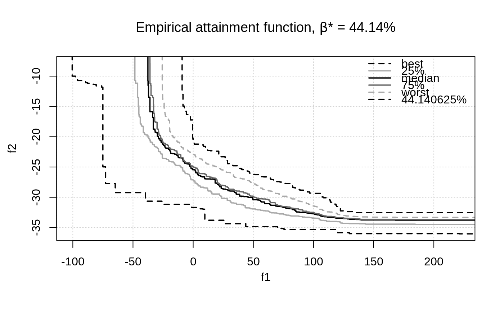
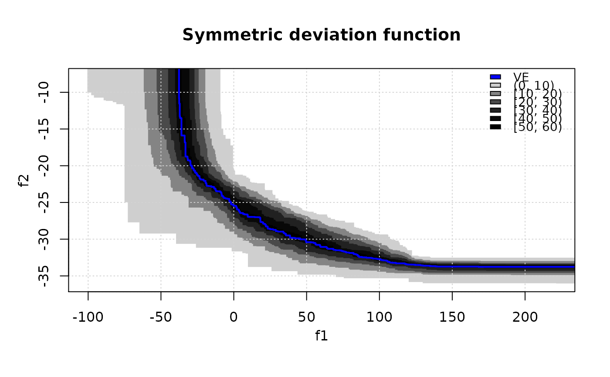
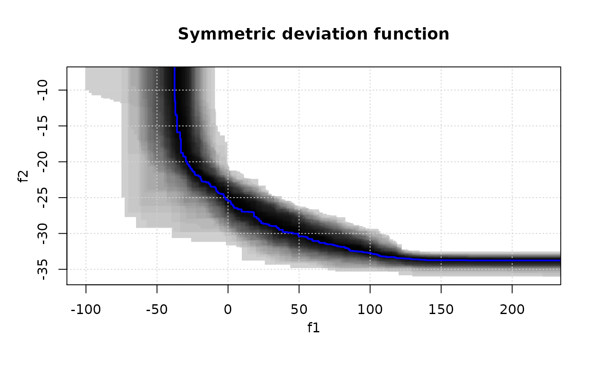
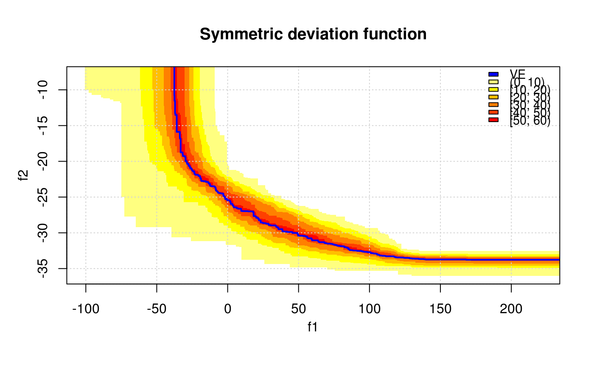
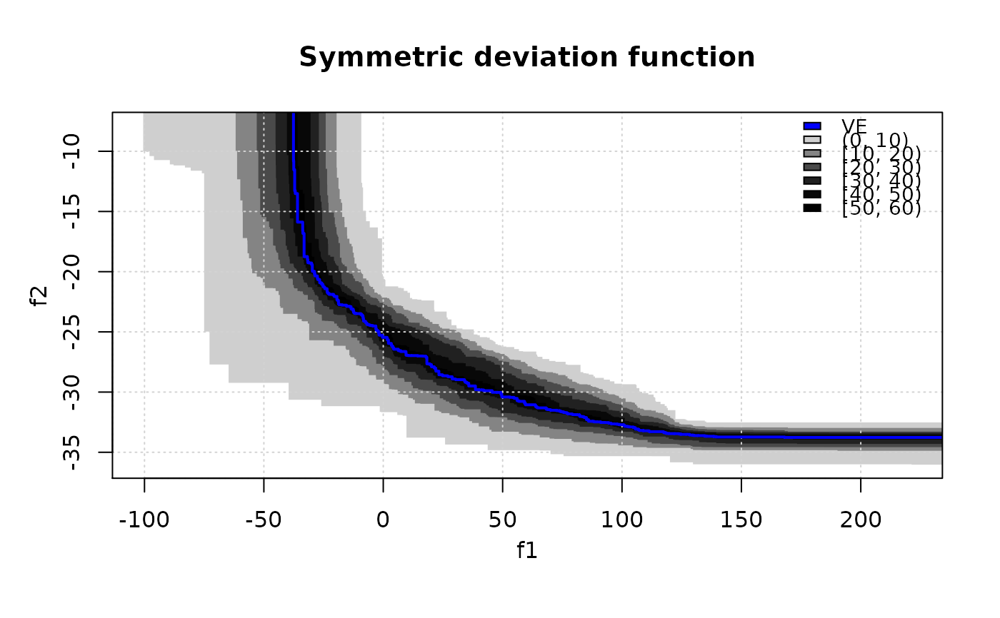
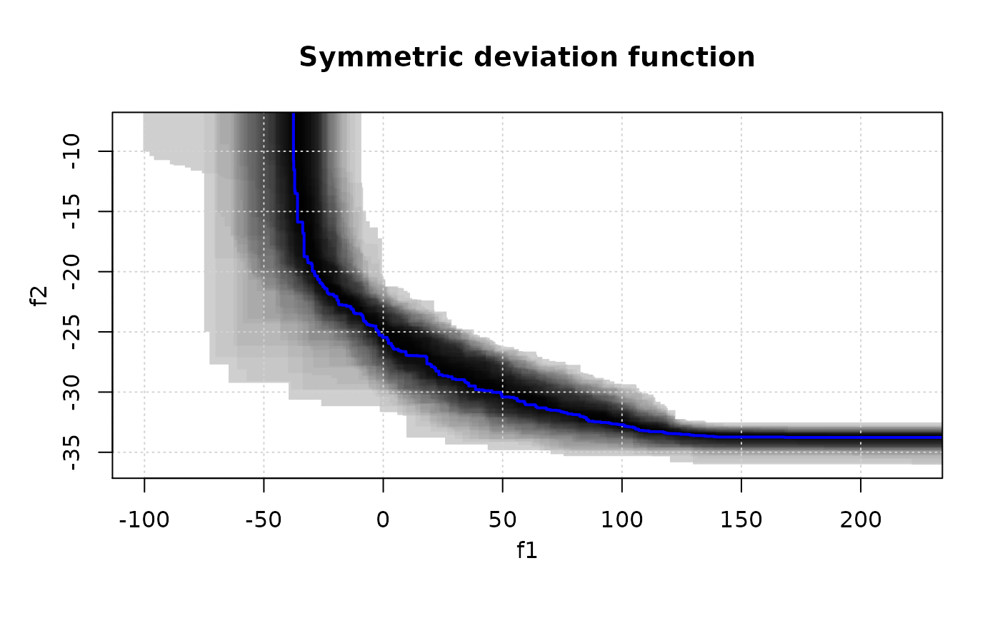
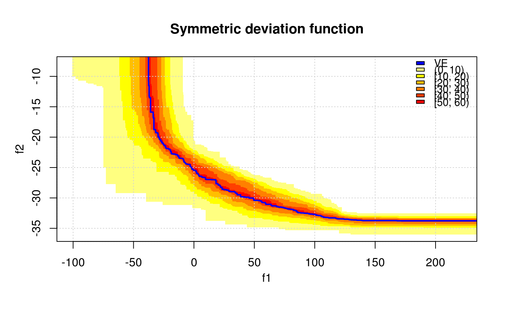

Compute Vorob'ev threshold, expectation and deviation. Also, displaying the symmetric deviation function is possible. The symmetric deviation function is the probability for a given target in the objective space to belong to the symmetric difference between the Vorob'ev expectation and a realization of the (random) attained set.
Arguments
- x
Either a matrix of data values, or a data frame, or a list of data frames of exactly three columns. The third column gives the set (run, sample, ...) identifier.
- reference
(
numeric())
Reference point as a vector of numerical values.- VE, threshold
Vorob'ev expectation and threshold, e.g., as returned by
vorobT().- nlevels
number of levels in which is divided the range of the symmetric deviation.
- ve.col
plotting parameters for the Vorob'ev expectation.
- xlim, ylim, main
Graphical parameters, see
plot.default().- legend.pos
the position of the legend, see
legend(). A value of"none"hides the legend.- col.fun
function that creates a vector of
ncolors, seeheat.colors().
Value
vorobT returns a list with elements threshold,
VE, and avg_hyp (average hypervolume)
vorobDev returns the Vorob'ev deviation.
References
M Binois, D Ginsbourger, O Roustant (2015). “Quantifying uncertainty on Pareto fronts with Gaussian process conditional simulations.” European Journal of Operational Research, 243(2), 386--394. doi:10.1016/j.ejor.2014.07.032 .
C. Chevalier (2013), Fast uncertainty reduction strategies relying on Gaussian process models, University of Bern, PhD thesis.
I. Molchanov (2005), Theory of random sets, Springer.
Examples
data(CPFs)
res <- vorobT(CPFs, reference = c(2, 200))
print(res$threshold)
#> [1] 44.14062
## Display Vorob'ev expectation and attainment function
# First style
eafplot(CPFs[,1:2], sets = CPFs[,3], percentiles = c(0, 25, 50, 75, 100, res$threshold),
main = substitute(paste("Empirical attainment function, ",beta,"* = ", a, "%"),
list(a = formatC(res$threshold, digits = 2, format = "f"))))

# Second style
eafplot(CPFs[,1:2], sets = CPFs[,3], percentiles = c(0, 20, 40, 60, 80, 100),
col = gray(seq(0.8, 0.1, length.out = 6)^0.5), type = "area",
legend.pos = "bottomleft", extra.points = res$VE, extra.col = "cyan",
extra.legend = "VE", extra.lty = "solid", extra.pch = NA, extra.lwd = 2,
main = substitute(paste("Empirical attainment function, ",beta,"* = ", a, "%"),
list(a = formatC(res$threshold, digits = 2, format = "f"))))
 # Now print Vorob'ev deviation
VD <- vorobDev(CPFs, res$VE, reference = c(2, 200))
print(VD)
#> [1] 3017.13
# Now display the symmetric deviation function.
symDifPlot(CPFs, res$VE, res$threshold, nlevels = 11)

# Levels are adjusted automatically if too large.
symDifPlot(CPFs, res$VE, res$threshold, nlevels = 200, legend.pos = "none")

# Use a different palette.
symDifPlot(CPFs, res$VE, res$threshold, nlevels = 11, col.fun = heat.colors)

# Now print Vorob'ev deviation
VD <- vorobDev(CPFs, res$VE, reference = c(2, 200))
print(VD)
#> [1] 3017.13
# Now display the symmetric deviation function.
symDifPlot(CPFs, res$VE, res$threshold, nlevels = 11)

# Levels are adjusted automatically if too large.
symDifPlot(CPFs, res$VE, res$threshold, nlevels = 200, legend.pos = "none")

# Use a different palette.
symDifPlot(CPFs, res$VE, res$threshold, nlevels = 11, col.fun = heat.colors)
